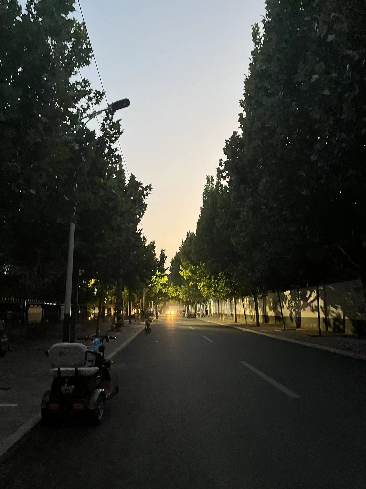

石家庄赞皇
赞皇县，隶属于河北省石家庄市，位于河北省西南部，太行山中段东麓，总面积1210平方千米。截至2023年11月，赞皇县辖7个镇、4个乡，常住人口为23.7万人。
赞皇自隋开皇十六年（596年）置县，已有1400多年的历史。因境内有赞皇山而得名：周，县境内有山名山赞，相传周穆王伐犬戎战胜于此，封为赞皇山；隋置县时，以山谓县称，称赞皇县。2005年，被联合国教科文组织首批命名为“千年古县”。赞皇县境内嶂石岩的天然回音壁，世所罕见，被列入吉尼斯世界纪录大全，嶂石岩地貌被列为中国五大旅游地貌之一。
赞皇景色
